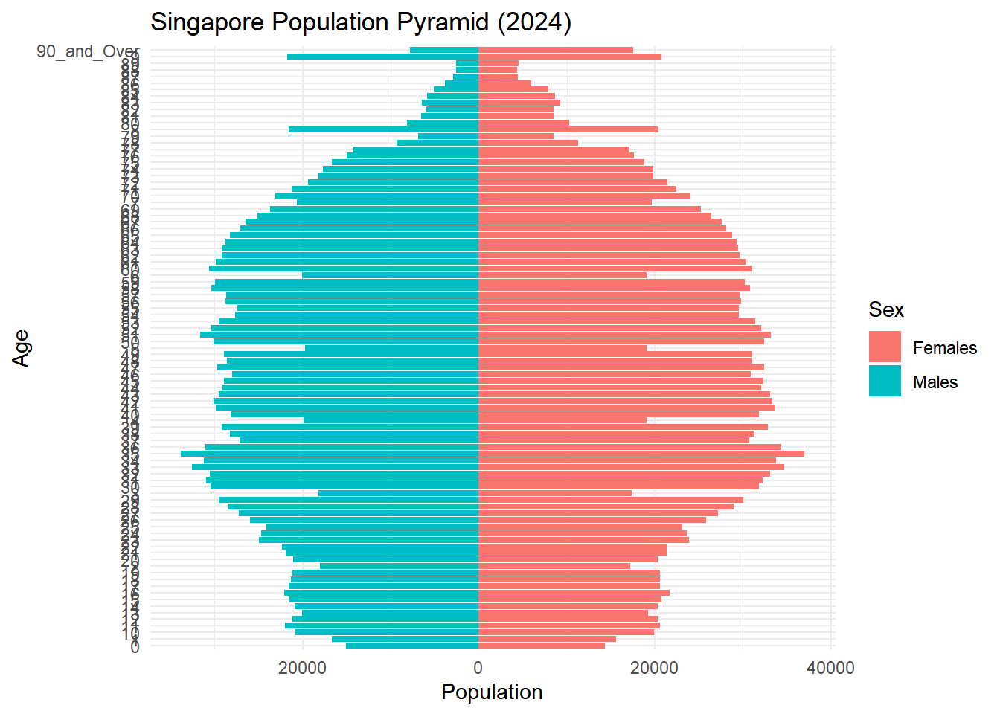
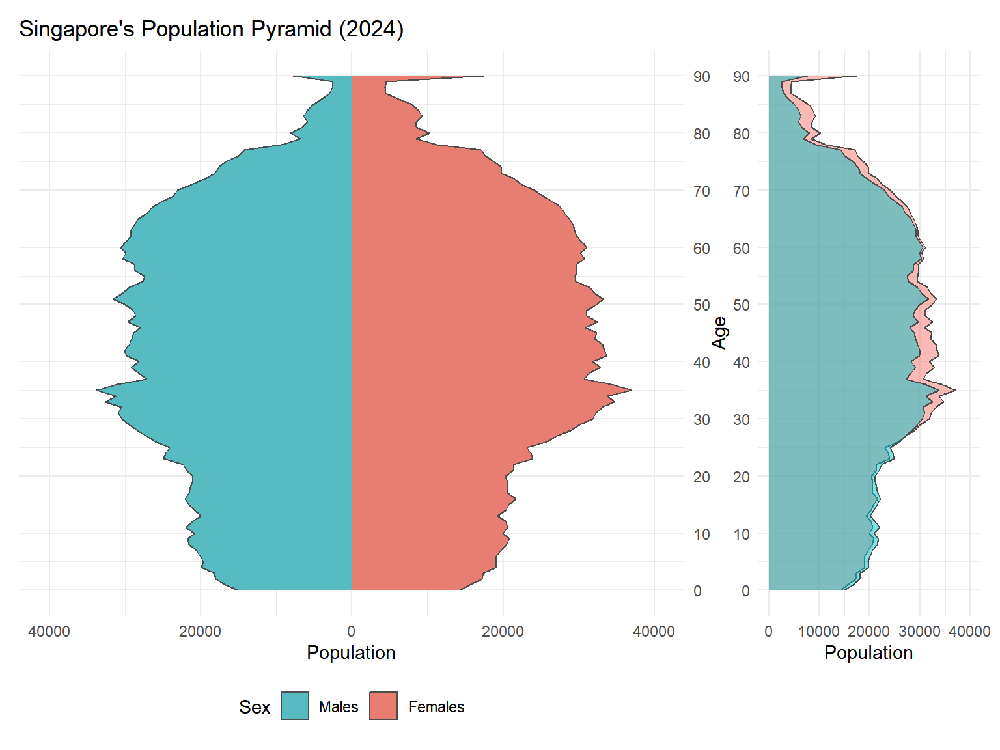
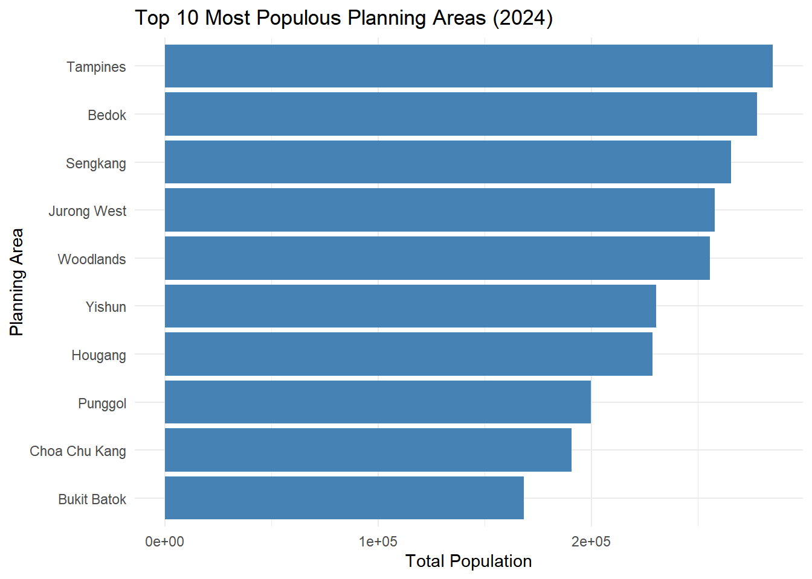
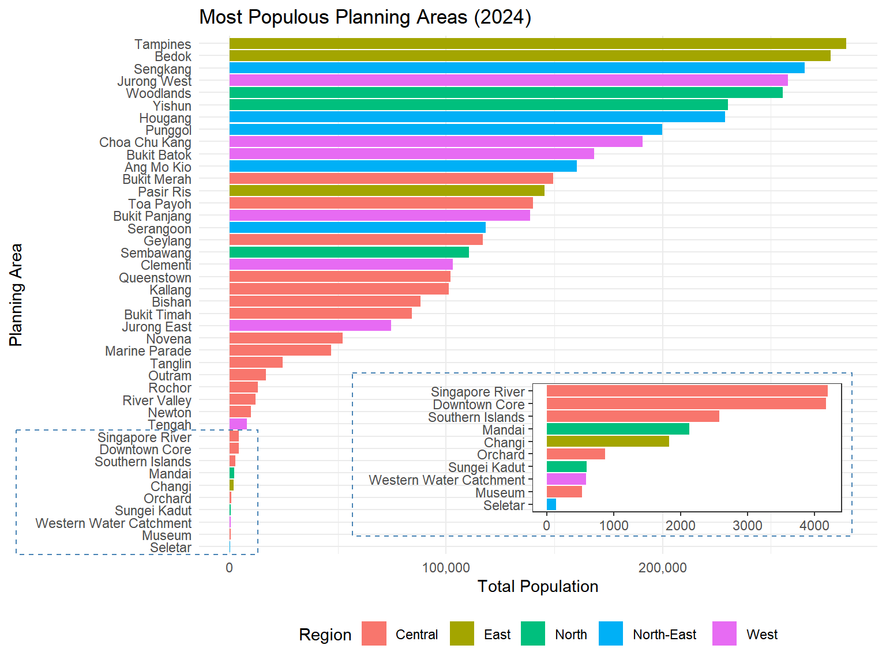
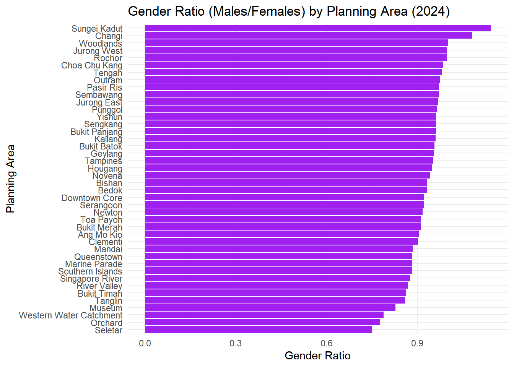
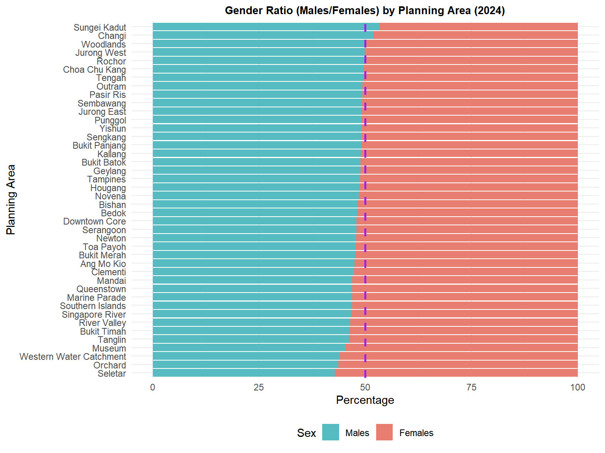

pacman::p_load(tidyverse, patchwork, ggthemes, knitr, cowplot)Take-Home Exercise 1-2: Demographic Structures and Distribution of Singapore in 2024
1-2: 1 Overview
This exercise will be composed of two phases:
- Phase 1: Designing my own data visualisation.
- Phase 2: Selecting one submission provided by my classmate, identifying three good design principles and critiquing three areas for further improvement. Based on these feedbacks, I will prepare the makeover version of their data visualisation.
This page will focus on Phase 2 of this exercise and you can find Phase 1 in Take-Home Exercise 1-1.
1-2: 1.1 Background
A local online media company that publishes daily content on digital platforms is planning to release an article on demographic structures and distribution of Singapore in 2024.
Assuming the role of the graphical editor of the media company, my classmates have also been tasked to prepare at most three data visualisation for this article.
1-2: 1.2 Peer Learning
After reviewing my classmates’ works, I have chosen the submission by RAJESH BABU SANTIGARI to review. I will have to analyse his work and identify three good design principles and three areas for further improvement. Based on these feedbacks, I have prepared the makeover version of his data visualisation to show how it can be enhanced.
1-2: 1.3 Preparation
The five R packages used in Take-Home Exercise 1-1 were also loaded into this working R environment using the code below.
1-1: 1.4 Importing Data
Similar to Take-Home Exercise 1-1, the data file called respopagesex2024 will be used.
It consists of data about Singapore Residents by Planning Area / Subzone, categorised by a Single Year of Age and Sex,for June 2024. It is in a csv file format.
The code chunk below imports respopagesex2024.csv twice, once for Rajesh’s data and once for my makeover data.
1-2: 2 Visualisations
For this section, I will display Rajesh’s visualisation first, followed by my improved version. Then, I will share my thoughts about his version and how I improved on it. Finally, I will go into the technical details about how I implemented my version and the additional insights that can be gained from it.
1-2: 2.1 Singapore’s Population Pyramid


Good Design Choices
- The horizontal bar chart of Population across Age, with Males on the left and Females on the right, clearly demonstrates his design intent of creating a population pyramid segmented by Sex.
- The use of colours effectively distinguishes the Genders, with Males in blue and Females in red.
- The inclusion of a clear title and legend reinforces the design intent by specifying that the chart represents Singapore’s Population Pyramid for the year 2024 and confirms the Gender colour association.
Poor Design Choices and My Improvements
- The y-axis is overly clustered with numbers overlapping, making it difficult to read.
- Improvements: For the Age column, the string label 90_and_Over was converted to an integer value of 90, and formatted the y-axis to display in increments of 10.
- Some sections of the bar chart display a white divider between bars, while others do not, resulting in an inconsistent and a messy appearance. It is also difficult to compare Gender populations at specific Ages.
- Improvements: An area chart with black outlines was used instead of a bar chart for a cleaner visual. Additionally, a comparative overlay chart was placed to the right of the plot to facilitate easy comparisons between Male and Female populations.
- The Male and Female charts uses different x-axis scales, which misleadingly suggests similar population sizes. Additionally, the legend order (Females → Males) does not match the chart order (Males → Females).
- Improvements: Standardised the x-axis for both Genders to 0-40,000. The legend was also reordered to reflect the chart layout (Males → Females).
1-2: 2.1.1 Techical Explanation
This section will cover the code and techniques used to improve on Rajesh’s “Singapore’s Population Pyramid” visualisation.
- The Age column was converted to string format before replacing 90_and_Over with 90. Then, the column was converted to a numerical formal.
- The bar graph was changed to an area graph using geom_area() instead of geom_bar().
- The x-axis scale was fixed by using scale_y_continuous(labels = abs, limits = c(-40000, 40000)) to set the range to be from -40,000 to 40,000.
- scale_y_continuous() was used because after coord_flip(), it adjusts the x-axis instead.
- The legend position was switch to the bottom using theme() and the legend order was fixed using scale_fill_manual().
- Finally, the overlaid gender chart was created using the same geom_area() method but using y = Pop instead of y = inv_Pop.
1-2: 2.1.1 Summary
Improvements
- The improved graph is cleaner.
- The Male and Female graphs are scaled according to their respective population sizes.
- The population difference between Males and Females can be viewed easily through the graph on the right.
1-2: 2.2 Most Populous Planning Areas


Good Design Choices
- The graph displaying the Top 10 Most Populous Planning Areas in Singapore is clean and easy to interpret.
- The title is appropriate for the graph and informative.
- Axis are correctly labelled with Planning Area and Total Population, aiding interpretation.
Bad Design Choices and My Improvements
- The x-axis uses scientific notation, which is not reader-friendly.
- Improvements: Changed the x-axis formatting to use standard numerical values with comma-separators for thousands.
- The graph is overly simplistic and lacks depth, missing an opportunity to provide broader insights into Singapore’s Demographic distribution.
- Improvements: Added a secondary Region field to segment the Planning Areas.
- The graph excludes data on the remaining Planning Areas in Singapore.
- Improvements: Expanded the chart to include all populated Planning Areas, and introduced a zoomed-in section for the 10 least populous Planning Areas for better clarity on their regional classification.
1-2: 2.2.1 Techical Explanation
This section will cover the code and techniques used to improve on Rajesh’s “Most Populous Planning Areas” visualisation.
- I had already implemented segregating Planning Areas by Sex in Take-Home Exercise 1-1: Population Across Planning Areas by Sex. Therefore, while looking through my classmates’ submissions, I was inspired to use the approach by DO QUYNH TRANG in implementing Regions.
- The data was then grouped by PA and Region.
- scale_y_continuous(labels = scales::comma) was used to convert the x-axis formatting from standard numerical values to comma-separators for thousands.
- The rest of the implementation is similar to my approach in Take-Home Exercise 1-1: Population Across Planning Areas by Sex.
1-2: 2.2.1 Summary
Improvements
- The improved graph provides information on all the Planning Areas instead of just the top 10 most populous ones. _ The improved graph is segregated by Regions and provides additional insights.
- For example, the Planning Areas in the bottom half of the plot are predominately composed of those in the Central region.
1-2: 2.3 Gender Ratio by Planning Areas


Good Design Choices
- The graph is appropriately ordered, making it easy to identify which Planning Areas have higher Gender Ratios.
- The title is concise and descriptive.
- The axis are correctly labelled with Planning Area and Gender Ratio to clarify the data shown.
Bad Design Choices and My Improvements
- The graph is difficult to understand since the concept of Gender Ratio is not intuitive. A value of 1 signifies equal numbers of Males and Females, while values above 1 indicates more Males.
- Improvements: Replaced the Gender Ratio with a Gender percentage distribution. The length of the Male/Female bar can then reflect their relative share within each Planning Area.
- The y-axis, listing the Planning Areas, is crowded and lacks visual separation.
- Improvements: Increased the plot height using #| fig-height: 6 to improve readability and add space between the Planning Area labels.
- The x-axis range (0 to ~1.1) does not represent the full spectrum of Gender Ratio, which should ideally be 0 to 2, with 1 as the median. This median is also missing from the graph.
- Improvements: Redefined the x-axis to span 0-100, and included a vertical line at 50 to denote the midpoint. Any bar exceeding this line indicates a Male-dominant area while those that do not reflect a Female-dominant one.
1-2: 2.3.1 Techical Explanation
This section will cover the code and techniques used to improve on Rajesh’s “Gender Ratio by Planning Areas” visualisation.
- The height of the plot was lengthened using #| fig-height: 6.
- The data preparation step is similar to my approach in Take-Home Exercise 1-1: Percentage of Age Groups by Planning Areas, but instead of calculating the percentage of Age Groups for each Planning Area, I calculated the percentage of Sex for each Planning Area.
- A median line at 50% was added using geom_vline().
1-2: 2.3.1 Summary
Improvements
- The improved graph is more visually appealing.
- It is more intuitive and explains the population distributions between Males and Females better.
- The new graph clearly shows that only two Planning Areas, Sungei Kadut and Changi, have a higher Male population compared to Females.